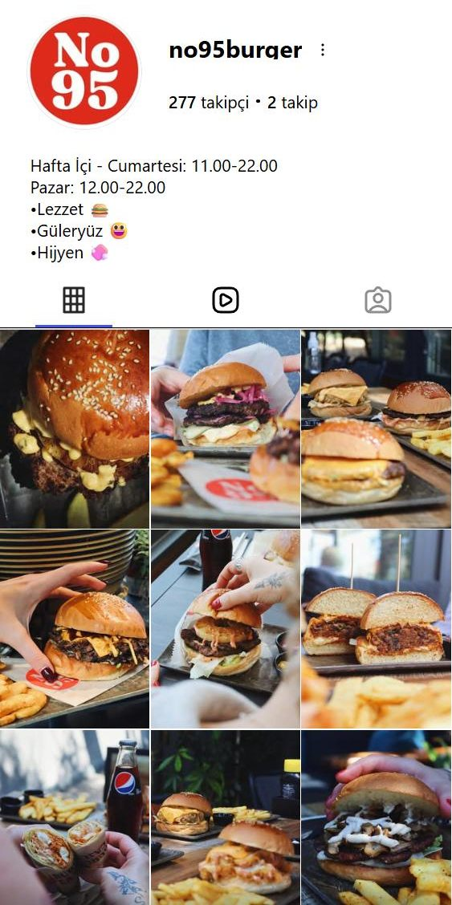

İşletmecinin ilgisi
Misafirler masaları tek tek dolaşan işletmeciden söz ediyor. Kameraya alınacak en samimi içerik bu.
No95'in Instagram hesabını ve Google kaydını Ümitköy ve Çayyolu'ndaki beş burgerciyle karşılaştırdım. Misafirleriniz sizi seviyor, ama bu sevgi Instagram'a yansımıyor. Gördüklerimin özeti ve önümüzdeki 90 günün ana hatları aşağıda.
Ümitköy'de 500'den fazla yorumu olan burgerciler arasında en yüksek puan.
Google yorum sayısının üçte birinden az.
Son gönderi 7 Mart 2024.
Profilde ikisi de yok. Google'da web sitesi de yok.
Solda No95'in bugünkü profili. Yanında Ümitköy'deki iki burgercinin profil yapısı; fotoğraflar çıkarıldı, yalnızca iskelet bırakıldı. Halkalar öne çıkanları, mavi satır bio linkini gösteriyor.

Sofa Burger 4,1 puanla 11 bin takipçiye ulaştı. No95 4,8 puanla 277'de.
Fark lezzette değil, Instagram'da.Misafirler masaları tek tek dolaşan işletmeciden söz ediyor. Kameraya alınacak en samimi içerik bu.
Ev yapımı ekmek ve sos, Tropik ve Lord burger. Ürün zaten fotojenik; eksik olan hareket ve hikâye.
AVM'ye gelen kalabalık birkaç adım ötede. Misafirlerin söz ettiği park sorunu için de basit bir önerim var; görüşmede anlatayım.
Profile giren herkesin No95'in açık ve canlı olduğunu ilk bakışta görmesi.
Haftada en az üç paylaşımla Galleria'ya gelenlerin aklında yer etmek.
Misafirlerin No95'i kendiliğinden paylaşması ve takipçinin yorum sayısını geçmesi.
Profilin yeni hâlinin taslağı. Ayrıntısı görüşmede.
Her çekim için bir brif hazırlanır: neyin, neden çekileceği ve görüntünün nerede kullanılacağı önceden bellidir.
İlk hafta mevcut durum ölçülür. Her ay sonunda tek sayfalık bir rapor: ne yapıldı, ne işe yaradı, sonraki ay neye odaklanılacak.
Görüşmede birlikte bakacaklarımız:
Uygun olduğunuz günü bu mesaja yanıt olarak yazmanız yeterli.